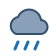
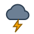
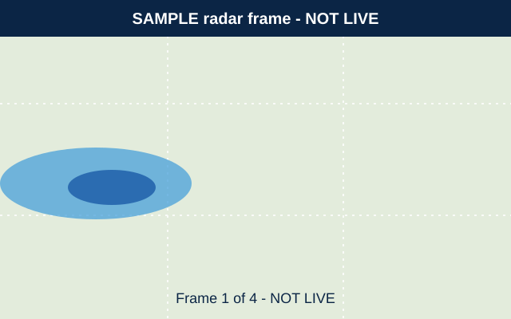

Saturday Sample
Clear
- High
- 44°F
- Low
- 27°F
- Precipitation chance
- 5%
- Wind
- N 7 mph
A sample hard freeze is possible at dawn, then a bright, chilly afternoon. Good fictional weather for a fictional jacket.
Invented forecast for Ashford Falls, Cedar Basin (fictional). Sample issue time: not a real time.
Intentional addition: the reference research marked a location lookup as inferred, not verified. This one searches 8 invented places only.
Invented observation. Not current weather.
52°F
Partly cloudy
In this made-up scenario, a calm, sunny start gives way to rain midweek as an invented cold front approaches. Thunderstorms are possible Thursday, then colder, breezier air arrives Friday ahead of a clear, frosty weekend. Read the full sample forecast discussion.
These are same-page links. With JavaScript, choosing one shows that view; without it all three views are listed in order.
| Day | Conditions | High | Low | Precipitation chance | Wind |
|---|---|---|---|---|---|
| Mon | Sunny | 61°F | 38°F | 5% | NW 8 mph |
| Tue | Partly cloudy | 64°F | 41°F | 10% | W 6 mph |
| Wed |  Rain showers | 58°F | 46°F | 70% | S 10 mph |
| Thu |  Thunderstorms | 55°F | 47°F | 80% | SW 14 mph |
| Fri | Windy and colder | 49°F | 34°F | 40% | NW 18 mph |
| Sat | Clear | 44°F | 27°F | 5% | N 7 mph |
| Sun | Sunny | 50°F | 30°F | 0% | NE 5 mph |
| Sample time | Conditions | Temperature | Precipitation chance | Wind |
|---|---|---|---|---|
| 6 AM | Clear | 41°F | 0% | NW 5 mph |
| 8 AM | Sunny | 46°F | 0% | NW 6 mph |
| 10 AM | Sunny | 54°F | 0% | NW 8 mph |
| 12 PM | Sunny | 59°F | 5% | NW 9 mph |
| 2 PM | Partly cloudy | 61°F | 5% | W 9 mph |
| 4 PM | Partly cloudy | 60°F | 5% | W 8 mph |
| 6 PM | Partly cloudy | 55°F | 10% | W 6 mph |
| 8 PM | Clear | 49°F | 10% | W 5 mph |
| 10 PM | Clear | 45°F | 5% | W 4 mph |
| 12 AM | Clear | 42°F | 0% | W 4 mph |
| 2 AM | Clear | 40°F | 0% | NW 3 mph |
| 4 AM | Clear | 38°F | 0% | NW 3 mph |
Clear
A sample hard freeze is possible at dawn, then a bright, chilly afternoon. Good fictional weather for a fictional jacket.
Sunny
Sunnier and a little milder in this sample scenario, with light winds all day.

The reference links to a live radar video. This replica has no video and no live radar. The linked page is a labeled placeholder with four invented frames.
Weather · Sample story
A fictional walk-through of how an invented front could shift winds and temperatures.
Ask the Meteorologist · Sample story
A sample answer about cool, damp air settling into low ground.
Weather · Sample story
Invented examples of what each label means, with no real places named.
Science · Sample story
A made-up summary of solar activity, written for the research replica.